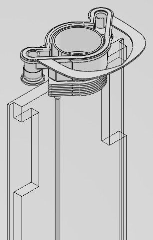
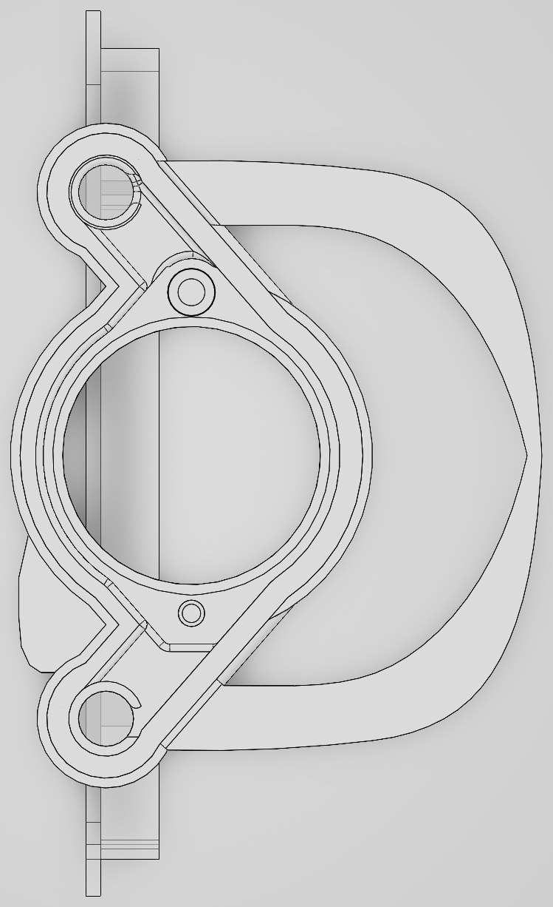
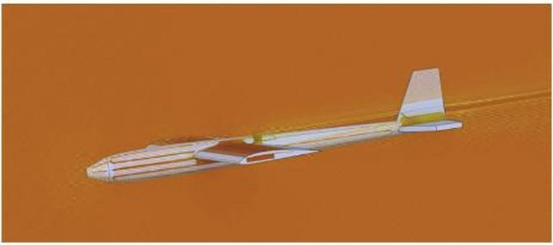
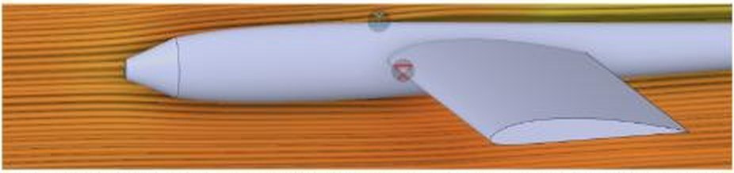
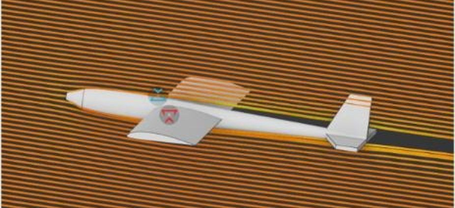
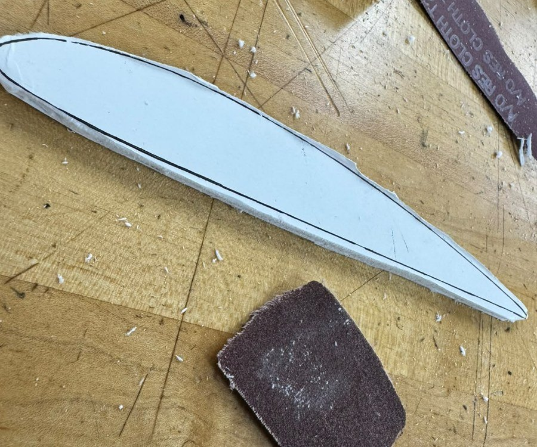
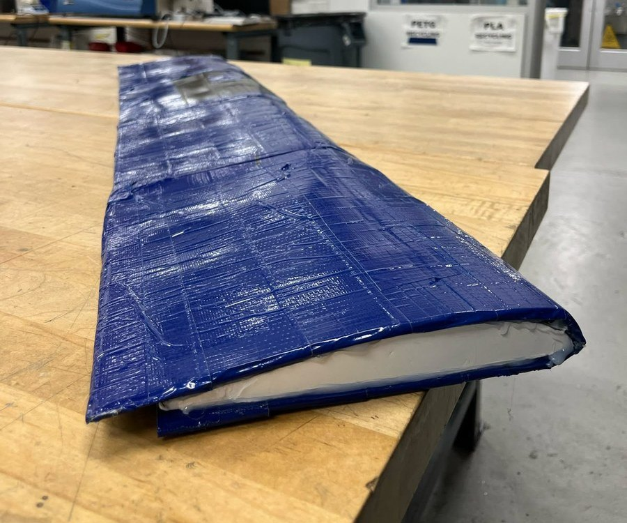
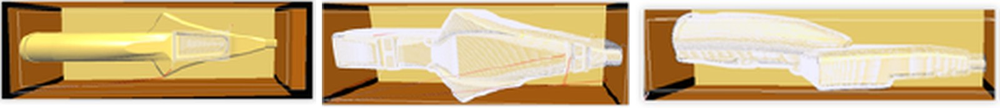
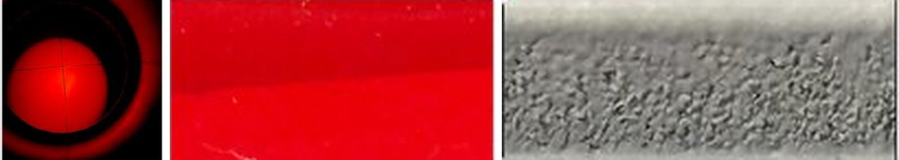
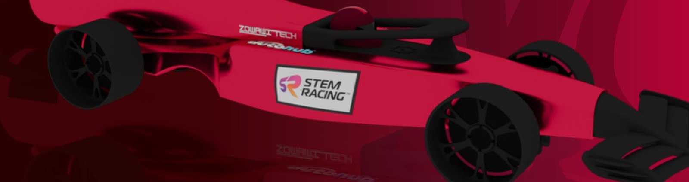

Mechanical Engineering, University of Florida, 2029
aswad.a@ufl.edu | linkedin.com/in/adel-aswad
Most of my engineering work so far is checking drawings against how parts get made, measuring what was actually built, and tracing faults back to a cause. Three projects, newest first.
Design Engineering Intern, Saudi Mais for Medical Products, Riyadh, June to August 2026
SolidWorks, AutoCAD, calipers and micrometers, PLA printing
Problem. Mold designs went from drawing straight to machining, so geometry errors only showed up after the tooling was cut. Some parts in production had no drawings or CAD model on file.
Approach. I rebuilt the undocumented bicarbonate bag holder, cap and inner filters in SolidWorks from caliper and micrometer measurements, with tolerances down to 0.02 mm where the parts meet the needle. I proposed printing each mold's geometry in PLA and checking it by hand before the drawing went to the machine shop. I also checked other engineers' release drawings for flatness, hole concentricity and wall thickness, and added ISO 286 fits and GD&T callouts where a drawing set the size of a feature but not how it had to fit.
Result. Parts made from the rebuilt model fit and worked. The print check covered six molds, about $900,000 of tooling, and the company still runs it. Ten molds went to production.
| Measure | Value |
|---|---|
| Molds released to production | 10 |
| Design revisions | 50+ |
| Tooling covered by the print check | about $900,000 across 6 molds |
| Tolerances checked on release drawings | 0.1 mm (caps) to 0.02 mm (needle interface) |


Industry Chair (aerodynamics and structures), Scope UF, founding member, January 2026 to present
ANSYS Discovery, ANSYS Fluent, SolidWorks, hand fabrication
Problem. Hand calculations give lift and drag for a wing on its own. They say nothing about how the fuselage, wing and tail interact, and we needed to know where the airframe was losing performance before building it.
Approach. I solved the full airframe in ANSYS Discovery in air at 12 m/s, steady and incompressible. The first solve read 905 Pa on the pressure monitor where about 0.85 Pa was expected. A gap of roughly a thousand times pointed at the fluid, not the geometry, and the domain turned out to be set to water. On the corrected model, flow broke off the sharp nose tip (Figure 2), so I replaced it with a blended fairing (Figure 3). Surface pressure sat aft of the main spar, so we reinforced the aft wing instead of stiffening every rib. I cut the Clark Y ribs from foam and sanded each one to the drawn line by hand, because a rib sanded under the line is a different airfoil from the one that was solved.
Result. The revised airframe solves to 2.19 N of drag at 12 m/s with flow attached along the fuselage and over the wing (Figure 4).
| Measure | Value |
|---|---|
| Freestream | air, 12 m/s, steady, incompressible |
| Peak local velocity | 13.8 m/s |
| Drag (X component of total force) | 2.19 N |
| Convergence checks | flat force trace, wall y+, pressure and viscous forces tracked separately |
| Wing section | Clark Y |





The sharp nose was never re-run in air, so 2.19 N is the drag of the revised state, not a measured saving. The propeller is not modeled, surfaces are rigid and smooth, and a ground plane still sits in the domain.
Manufacturing Engineer, Vestyge Racing, STEM Racing, Riyadh, November 2024 to July 2025
QuickCAM Pro, Denford 2600 Pro CNC router, EinScan HX, ImageJ
Problem. The car body is machined from a polyurethane block and has to meet a surface finish target, a 48.5 g mass limit and dimensional tolerances at once. Material removed to help one can hurt another.
Approach. I wrote all toolpaths in QuickCAM Pro (Figure 6) and machined the body in three setups, using dowel-located foam fixtures so every flip registered the same way. We had no profilometer, so I measured roughness from 200x microscope images in ImageJ, scaled against a reference (Figure 7). That number showed a 12% stepover was too coarse. At 10% the surface met target and finishing dropped from 800 grit sanding to one 1000 to 1200 grit pass. I checked the finished body against CAD with an EinScan HX 3D scan. When printed parts failed, I traced it to layer adhesion and internal stress and wrote an annealing protocol that raised their strength by up to 40%.
Result. First nationally, 754 of 800 points, against more than 100 teams. Best run 1.001 s, down from 1.193 s across four builds (Figure 8).
| Measure | Target | Achieved |
|---|---|---|
| Surface roughness | 15 µm Ra max | 14.8 µm Ra |
| Car mass | 48.5 g max | 48.1 g |
| CNC body mass | 16 g | 16 g |
| Scan deviation, critical zones | none set | within ±0.15 mm |
| Printed part strength, annealed | none set | up to 40% higher |


